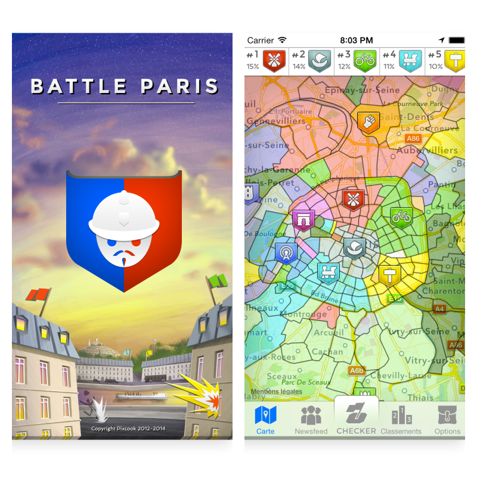
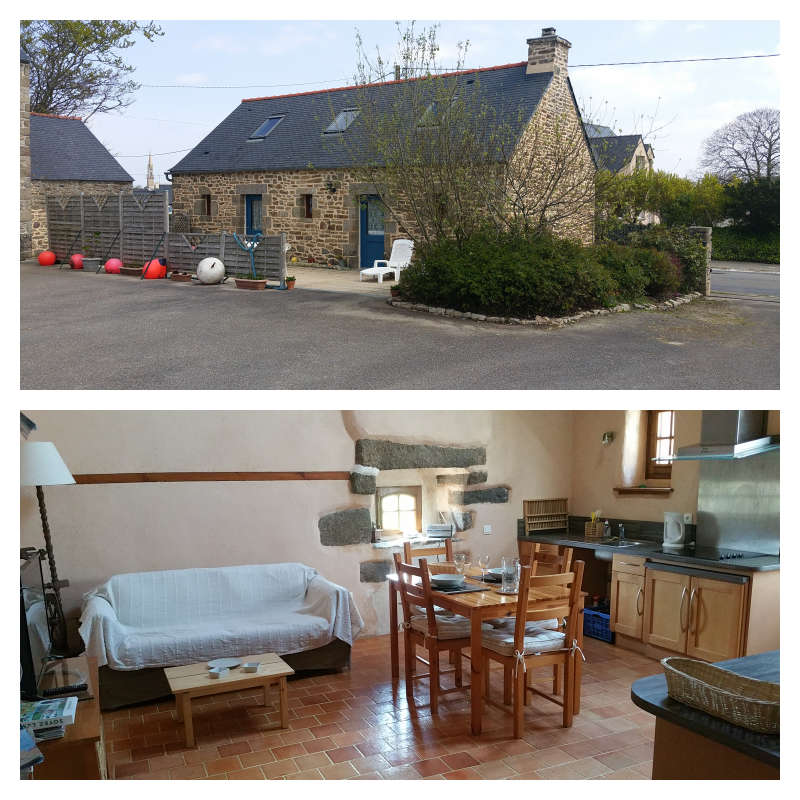
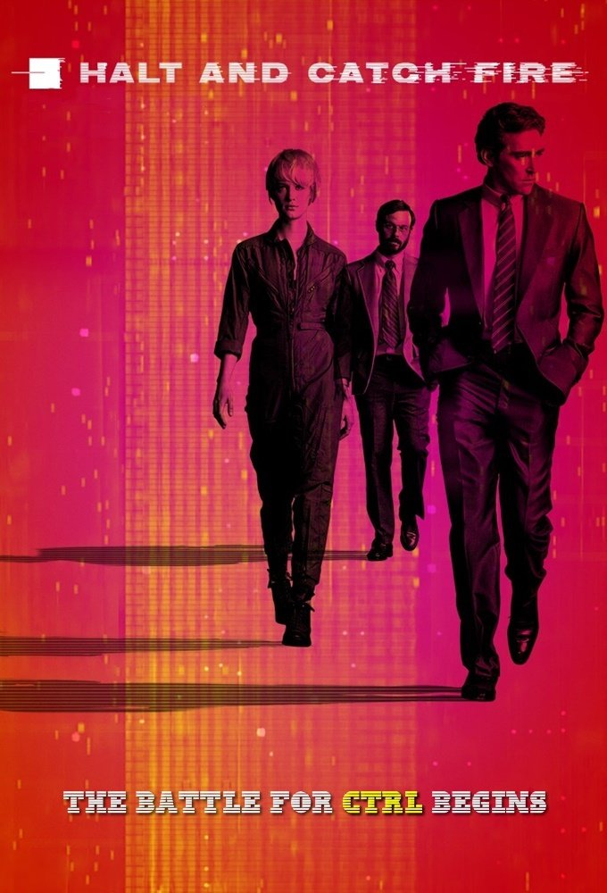

Alex Deval
Future developer?
I did a lot of different jobs in my life, most of them having to do with languages. I've always wanted to learn code because that's another type of language. I don't know exactly what I will do yet but I guess I'd liked to be a developer and develop apps designed specifically to meet the needs of NGOs.
When I'm not coding...
|  |
BattleParisBattleParis est un jeu en réalité alternée basé sur la géolocalisation et le géoréférencement. Paris et sa banlieue sont divisés en quartiers, que les différentes équipes cherchent à conquérir. Pour ce faire, chaque joueur peut "checker" en se géolocalisant et en dépensant un cœur. Il marque ainsi des points pour son équipe dans le quartier où il se trouve. La jauge d'un joueur peut contenir jusqu'à cinq cœurs et se recharge d'un cœur toutes les deux heures. En checkant, le joueur marque des points pour son score individuel, qui apparaît dans le classement hebdomadaire, mensuel et de saison. Chaque quartier appartient à l'équipe qui y a mis le plus de points et, à la fin de chaque saison (d'une durée de trois mois), l'équipe gagnante est celle qui possède le plus de quartiers. |
|  |
Ty GuenTy Guen is a guesthouse in Plouguin, Nord Finistère. It is a unique and unforgettable farm which offers a refreshing balance between old-world tranquility and modern convenience. Renovated using traditional and biological materials, this handicapped-accessible farmhouse offers relaxing country accommodations only minutes from the center of the village. The charming guest house offers a dining room/lounge with kitchen area, bedroom with a double beds, shower and lavatory downstairs, and upstairs you will find a relaxing mezzanine with two single beds. Heated by aero thermal heating, with television, DVD player, washing machine and microwave. Bed linen and towels are provided. You will be surrounded by the rhythms of nature – an enclosed terrace with garden furniture and barbecue. Two bicycles are at your disposal for a lovely ride to the sea 7km away. |
My favourites tv series
|  |
Halt and Catch FireTaking place over a period of ten years, the series depicts a fictionalized insider's view of the personal computer revolution of the 1980s and later the growth of the World Wide Web in the early 1990s. The show's title refers to computer machine code instruction HCF, the execution of which would cause the computer's central processing unit to stop working ("catch fire" was a humorous exaggeration). |
Madam SecretaryMadam Secretary explores Secretary Elizabeth McCord's life as the determined United States Secretary of State. McCord drives international diplomacy, battles office politics, and circumvents protocol if needed as she negotiates worldwide issues. The show also focuses on the personal lives of the characters. McCord is also a college professor and a former CIA analyst who left the agency for ethical and personal reasons. The President values her apolitical leanings, deep knowledge of the Middle East, flair for languages, and ability to not just think outside the box, but to not even know there is a box. |